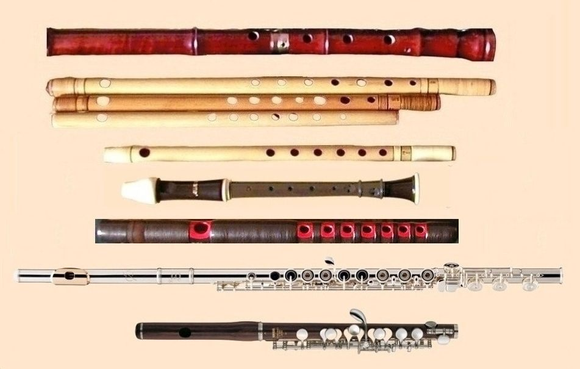

მუსიკალური ინსტრუმენტი— მოწყობილობა, რომელიც შექმნილი ან/და გამოყენებულია მუსიკალური ხმის მისაღებად. ამ თვალსაზრისით, ყველაფერი შეიძლება მუსიკალურ ინსტრუმენტს მივაკუთვნიოთ, რაც მუსიკალურ ხმას გამოსცემს.
სადავო სტატუსის პირველი მუსიკალური ინსტრუმენტის წარმოშობა თარიღდება ქრისტეს შობამდე 65 000 წლით. არტიფაქტების მიხედვით, რომელიც საყოველთაოდ აღიარებულია, პირველი ადრეული ფლეიტა თარიღდება ქრისტეს შობადე 35 000 წლით.
შუა საუკუნეებში ინსტრუმენტებს მესოპოტამიიიდან აღმოვაჩენდით მალაის არქიპელაგზე, ხოლო ევროპელები უკრავდნენ ჩრდილო-აფრიკული წარმოშობის ინსტრუმენტებზე.
როგორც მოგახსენეთ ფლეიტა უძველესი მუსიკალური საკრავია მსოფლიოში რომელიც გერმანიაში აღმოჩნდა 35000 წლის წინ ძვლისგან გამოთლილი. ფლეიტა არის სასულე მუსიკალური საკრავი და არსებობს ორი სახის: განივი და გასწვრივი.
